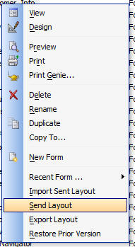

Send/Receive Individual Layout Definitions
In Alpha Five, Layouts (Reports, Labels, Forms, Browses and Letters) are all stored in the data dictionary for the table or set on which the Layout is based.
In the case of a table, the data dictionary files have these extensions: .ddd, .ddm and .ddx. In the case of a set, the data dictionary files have these extensions: .set, .sem and .sex.
Because all of the Layouts for a particular table or set are stored in the same physical data dictionary files, it is difficult for a developer to send a client an individual Layout. You can easily send a client a new copy of the data dictionary (.ddd, .ddm and .ddx files in the case of a table, or .set, .sex and .sem files in the case of a set), but doing so will overwrite any Layouts that the client created, or modified.
Now, you can simply right click on any Layout and select Send Layout.

This command will package an individual Layout into a special file (with an .a5pkg extension) that can be emailed to a client.
Then, once the client receives the file, they simply right-click on white space in the Control Panel and select Import Layout.... Alpha Five will then automatically add the Layout to the appropriate data dictionary.